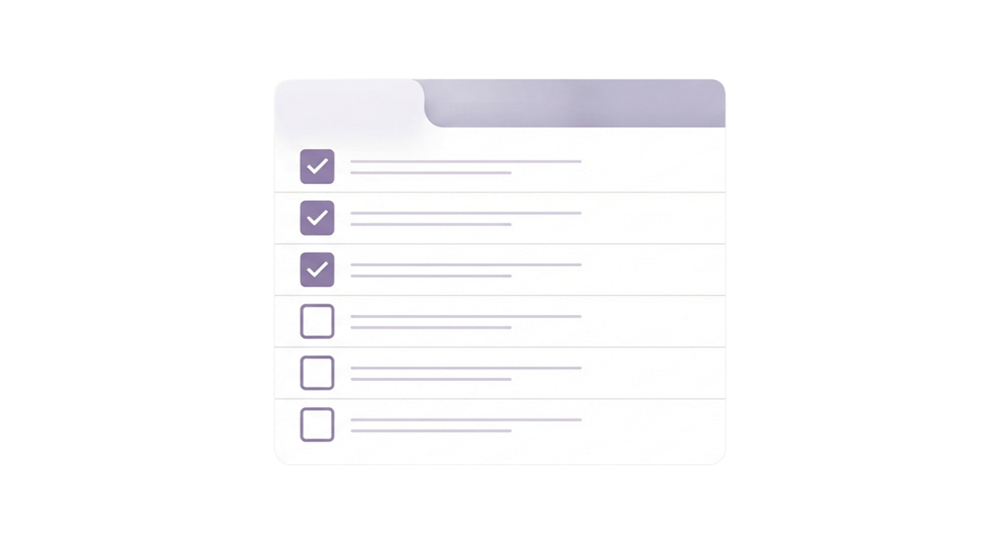

Daily Organiser
シンプルなタスク管理アプリ。
仕事とプライベートのタスクを分けて管理可能。
HTML、CSS、JavaScriptを用いて開発。

Preview
Background
Notionを日常的に使う中で、自分が最もよく利用している機能がTo-doリストであることに気づきました。
そこで、必要な機能だけを切り出し、シンプルで使いやすいタスク管理アプリを制作しました。
Notionのデスクトップアプリは新しいウィンドウを開く必要があり、少しメモを取りたいときに不便さを感じました。
ブラウザ版も利用できますが、初回はログインが必要なため、手間がかかります。
そのため、本アプリは「思い浮かんだタスクを、ログイン不要ですぐに記録できること」をコンセプトに制作しました。
Features
- タスクの追加・表示
- 思いついたタスクをすぐに記録し、一覧で管理できます。
- タスクの編集
- 内容が変わっても簡単に更新できます。
- タスクの削除（個別・一括）
- 不要なタスクを状況に応じて整理できます。
- 完了状態の管理
- 完了したタスクを視覚的に区別し、進捗を把握しやすくします。
- ローカルストレージへの保存
- ログイン不要で、ブラウザを閉じてもタスクを保持できます。
- カテゴリ別フィルタリング
- 仕事とプライベートのタスクを切り替えながら管理できます。
Tech Stack
- Frontend
-
- HTML
- CSS
- JavaScript
- Deployment
- Vercel
Technology Choices
JavaScriptのCRUD操作やローカルストレージ、フィルタリング機能の実装を目的に制作を進めました。
フレームワークは使用せず、JavaScriptの基礎理解に重点を置きました。
System Design
仕事とプライベートのタスクを素早く切り替えられるよう、All・Work・Personalの3つのタブを設けました。
現在選択しているカテゴリが一目で分かるよう、アクティブなタブにはアクセントカラーを適用しています。
各タスクにはカテゴリラベルを表示し、個々のタスクがどのカテゴリに属するのか視覚的に判断しやすくしました。
Implementation Highlights
データと画面表示の責務を分離することを意識して実装しました。
タスクはtasks配列で一元管理し、このデータを基準に追加・編集・削除・完了状態の更新を行っています。
画面表示は常にこの配列から生成することで、データとUIの整合性を保ちやすい構成にしました。
また、入力時には前後の不要な空白が除去されるようにしました。
マウス操作だけでなく、Enterキーによる保存やEscapeキーによるキャンセルにも対応することで、キーボード中心でも快適に操作できるよう工夫しました。
Challenges & Solutions
開発当初は、各タスクの状態管理や一意なIDの付与実装に苦労しました。
解決策として、各タスクをオブジェクトとして管理し、ID・タスク内容・カテゴリ・完了状態を保持できるよう工夫しました。
状態管理や今後の機能拡張を考慮したコード記述を心がけました。
Future Improvements
今後は、アクセシビリティの改善に取り組む予定です。
フォーム要素やボタンにaria-labelなどの適切な属性を追加し、スクリーンリーダー利用者への配慮を強化します。
また、一部の配色においては、コントラスト比が不十分な状態です。
使用カラーを見直し、より視認性の高いUIへ改善したいと考えています。